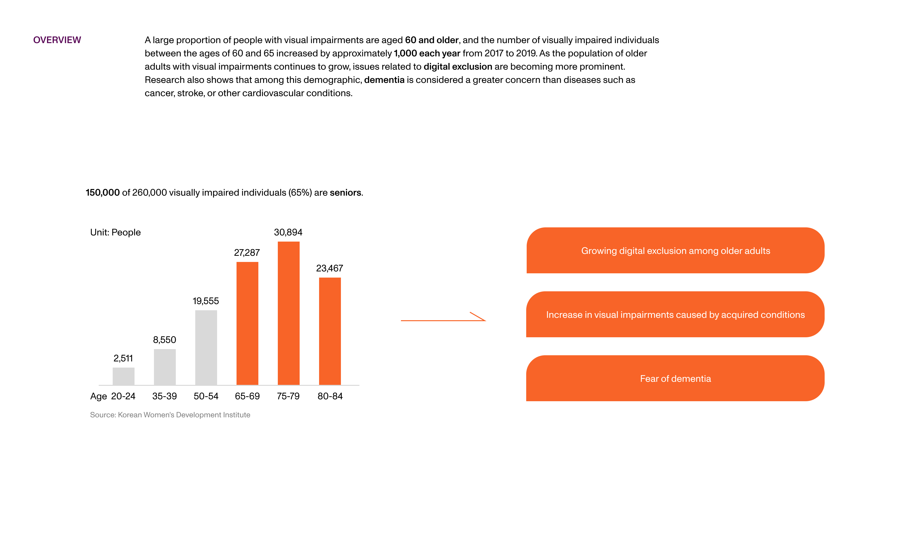
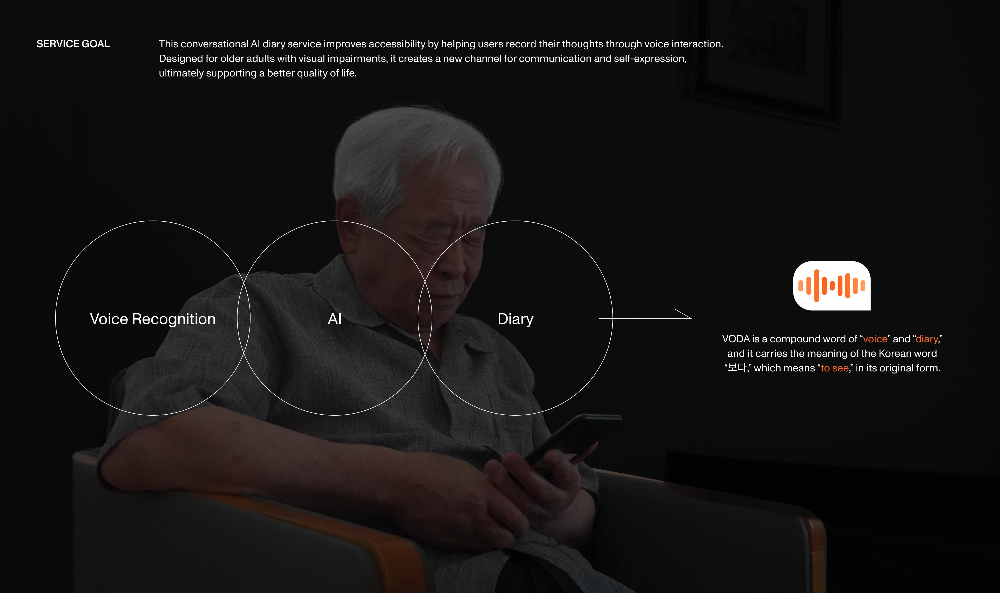
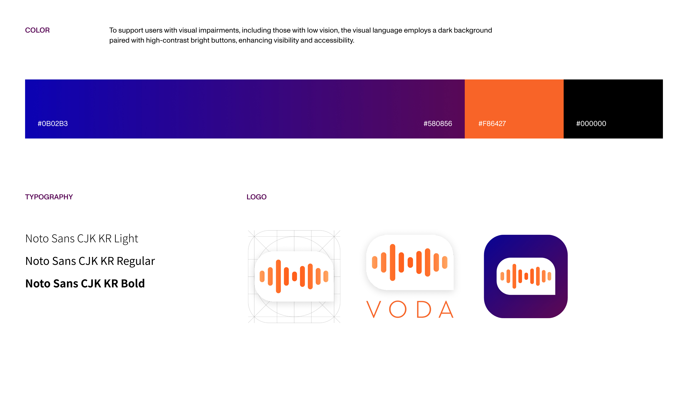
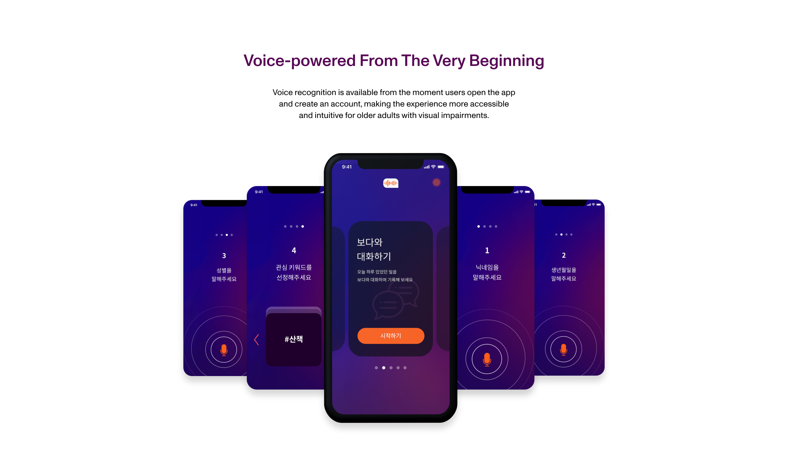
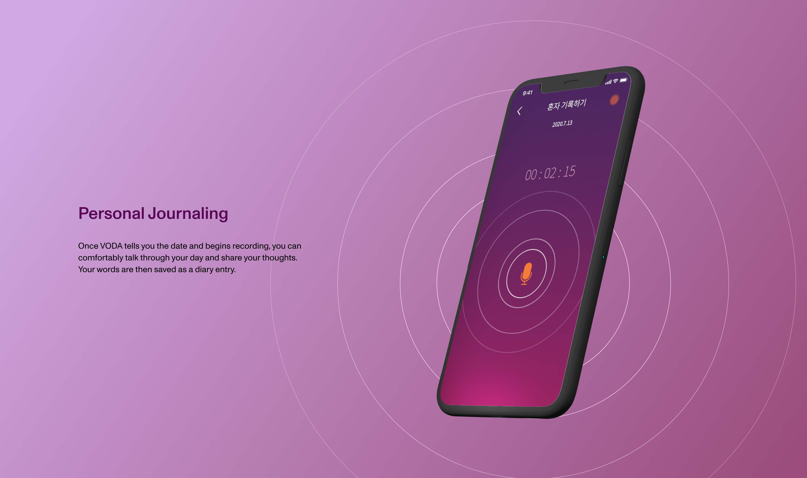
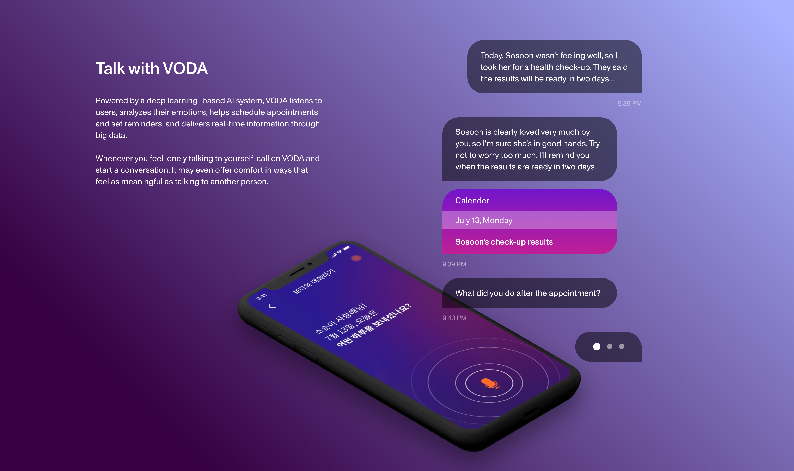
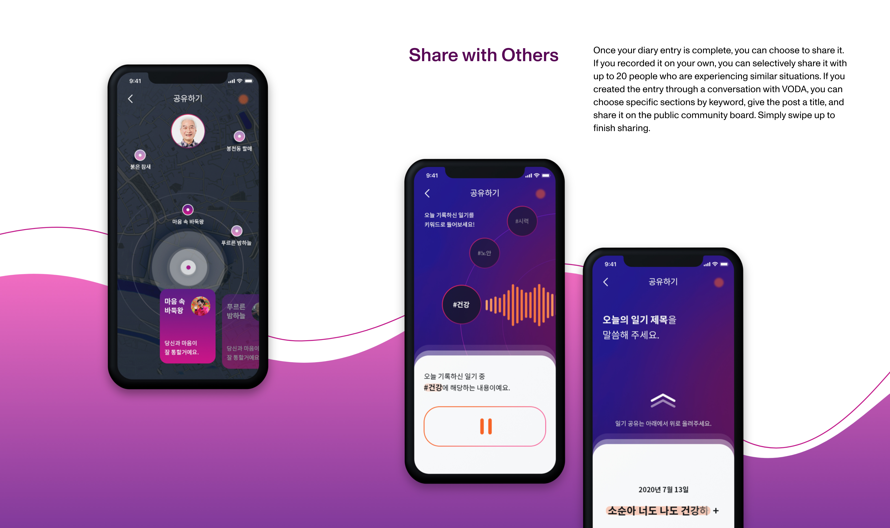
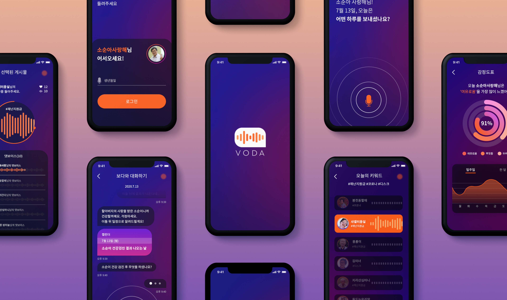

UX/UI
TheHandsome.com, A Fashion E-commerce App

App, Interaction
Agency: Di9coms
Client: TheHandsome.com
→ Behance
Agency: Di9coms
Client: TheHandsome.com
→ Behance
VODA is a conversational AI journal service created to address digital exclusion among older adults with visual impairments. Through voice-first interactions, the app helps users document their lives, engage in meaningful conversations, and connect with others in a more accessible and supportive way.








